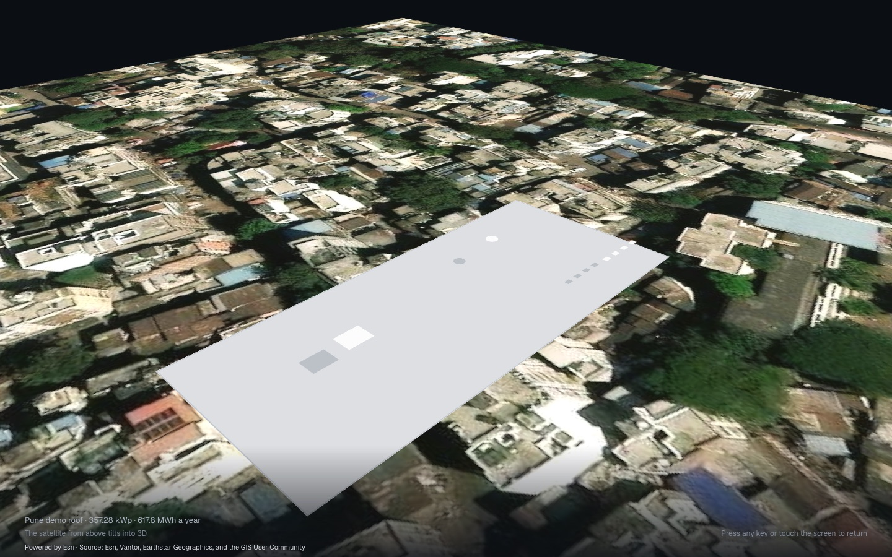
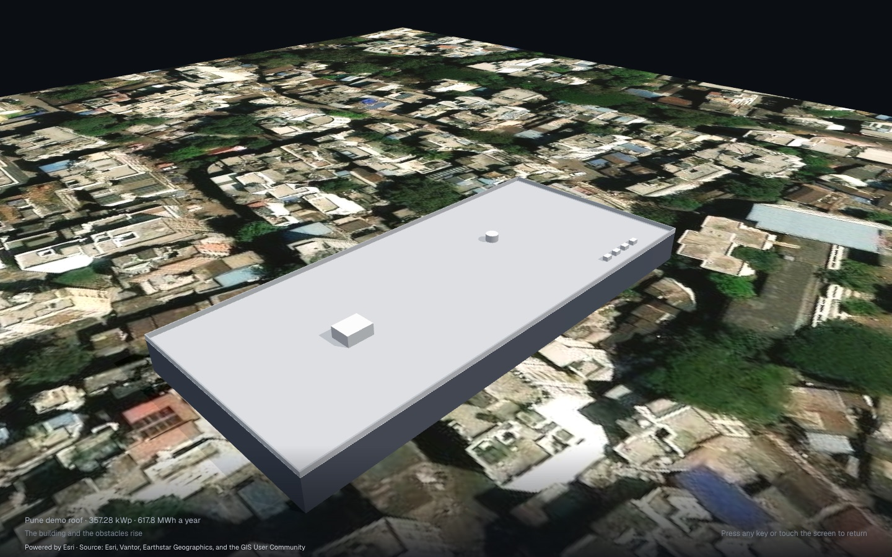
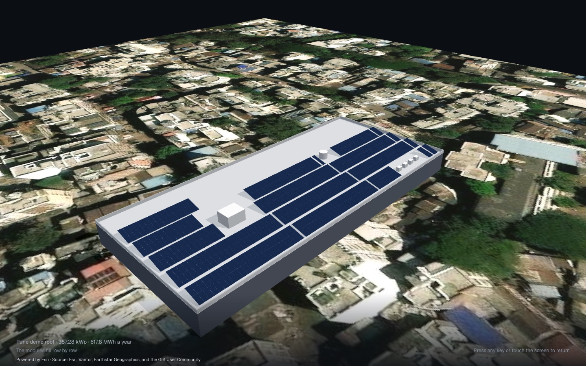
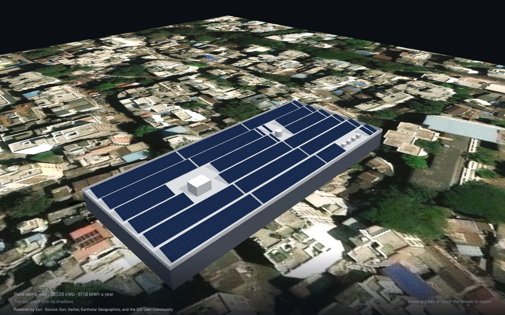
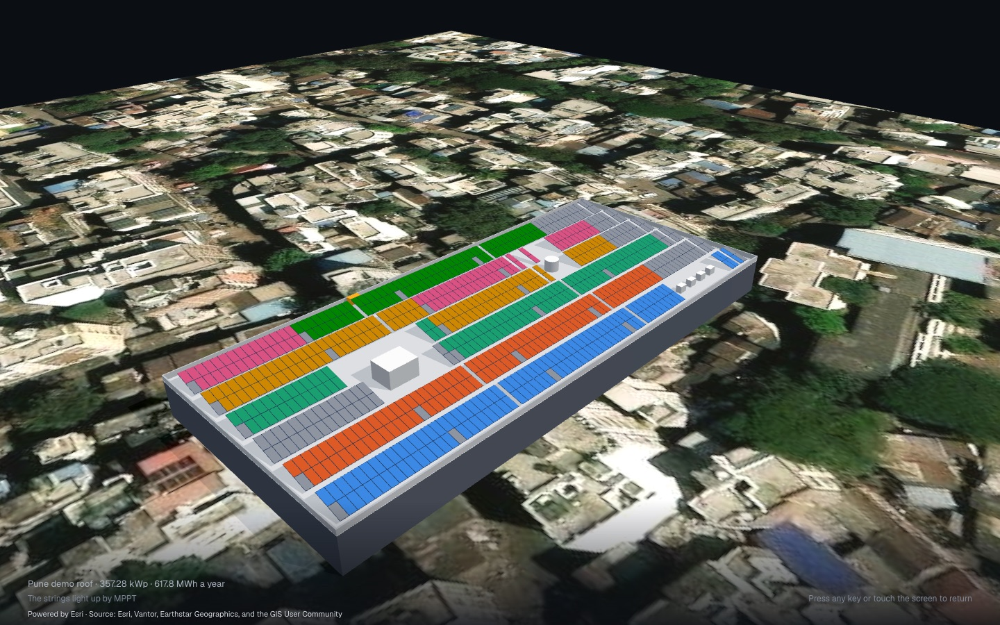

Desktop 1440 × 900; the phone has no Present. Each scene keeps the stage in full view and shows its figures in one dimmed panel at the top left (rgba(5,7,10,0.58), blurred behind, radius 18), never the whole screen dimmed, the energy’s too (the owner preferred the panel to the dimmed screen). The lead figure counts as the scene plays, in tabular figures, in the place of its final value; the others stand. The panel fades in with its scene and out with it. The day scene draws the sun path over the roof, as the Sun lens does, and the sun moves along it with the hour. The imagery is always the ground in Present. Every figure is the demo’s, caught where the screenshot under it was taken.
1 · The place“The satellite from above tilts into 3D”The roof's area counts up to 3,600 m² as the camera tilts; the place stands.

1 · The place
Roof area3,445m²
Latitude18.52°N
Longitude73.86°E
2 · The roof“The building and the obstacles rise”The obstacles count as they rise, one by one, to 6.

2 · The roof
Obstacles3of 6
Roof90.0 × 40.0m
Parapet0.9m
3 · The array“The modules fill row by row”The positions count with the rows as they fill, to 790.

3 · The array
Positions474of 790
Rows6
Tilt15°portrait
4 · The sun, 21 December“The day plays with its shadows”The time runs from sunrise 06:33 to sunset 17:27; the sun moves along its path over the roof, the shadows with it; its height and bearing follow.

08:0012:0016:00
4 · The sun, 21 December
Solar time10:22
Sun height41.7°
Bearing149°SE
5 · The strings“The strings light up by MPPT”The DC capacity counts up to 357.28 kWp as the strings light up; DC/AC 1.30 with its tick at the end.

5 · The strings
DC capacity334.4kWp
Strings22 × 29modules
Inverter1 × 275kW
6 · The energy“The energy counts up”In a panel too, no longer the whole screen dimmed: the energy counts up over the first six seconds and the chain cascades beside it, from the array's nominal energy to the grid; shown here at rest.